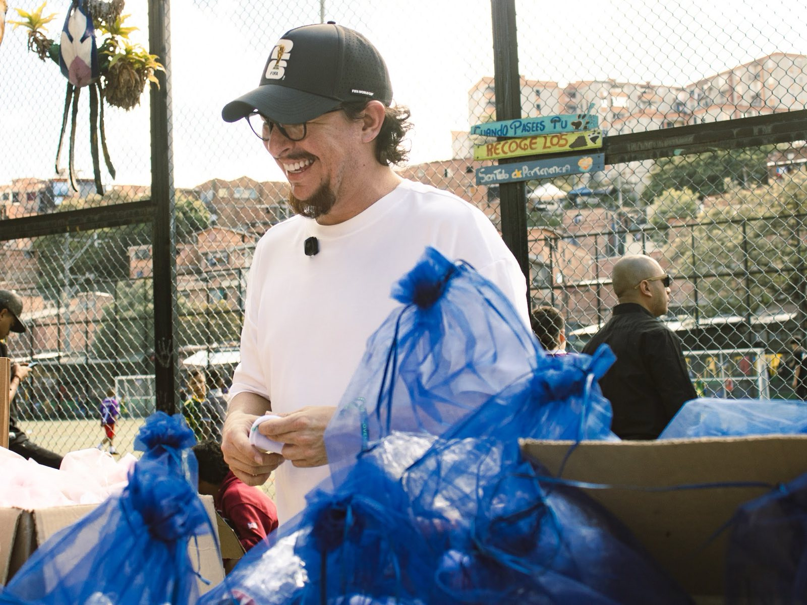
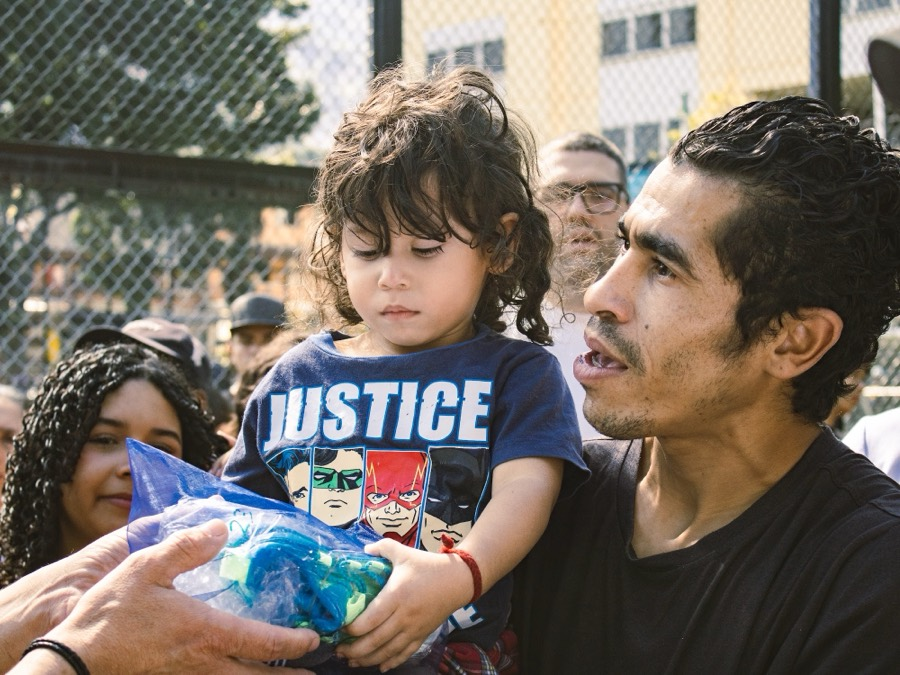

DIPUTADO DE
ANTIOQUIA
Mi compromiso es con el deporte, la juventud y la identidad antioqueña: representar a nuestra gente en la Asamblea Departamental.
EL DIPUTADO
DEL DEPORTE
En Antioquia hay cientos de niños con talento futbolístico que se quedan fuera de la cancha por no tener un par de guayos. La Guayatón recoge y dona guayos para que el talento no se quede esperando en la banca.
Conoce La Guayatón →
Unos guayos,una oportunidad
 Mateo Escobar Valencia
Mateo Escobar Valencia

¿QUIÉN SOY?
Hola, soy Mateo Escobar Valencia y crecí en La Estrella. Estudié en la Universidad Pontificia Bolivariana. Desde siempre he sentido pasión por el deporte y por el poder que tiene para transformar la vida de los jóvenes de Antioquia, y por eso decidí dedicar mi trabajo público a esa causa.
“La vida es para los que creen”
Conoce mi historia completa →MI VISIÓN SE CONSTRUYE SOBRE CUATRO PILARES
Deporte
El deporte como motor de oportunidades para la niñez y juventud antioqueña.
Juventud
Prevención y transformación juvenil, y alternativas reales de vida digna.
Identidad Antioqueña
Fortalecer la cultura del fútbol y el orgullo cívico de nuestra región.
Gestión Ciudadana
Control político permanente y representación cercana a la gente.
LOGROS DESTACADOS
Programas en los que Mateo ha aportado desde la institucionalidad, con resultados medibles.
SÉ PARTE DEL EQUIPO DE MATEO
Necesitamos antioqueños comprometidos que quieran trabajar por el deporte y la juventud desde sus comunidades.